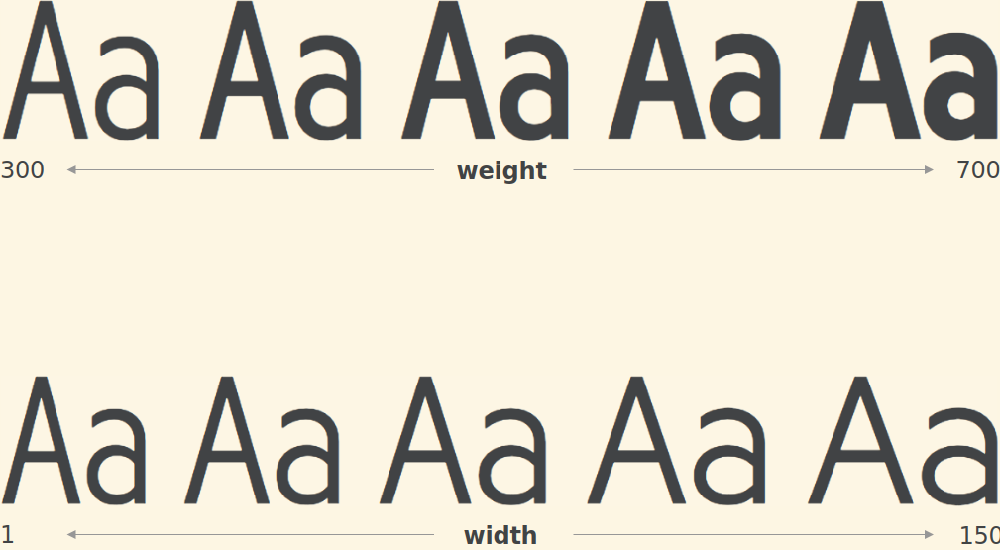
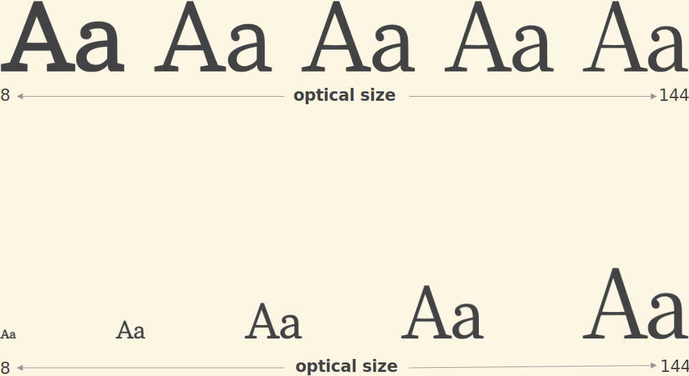
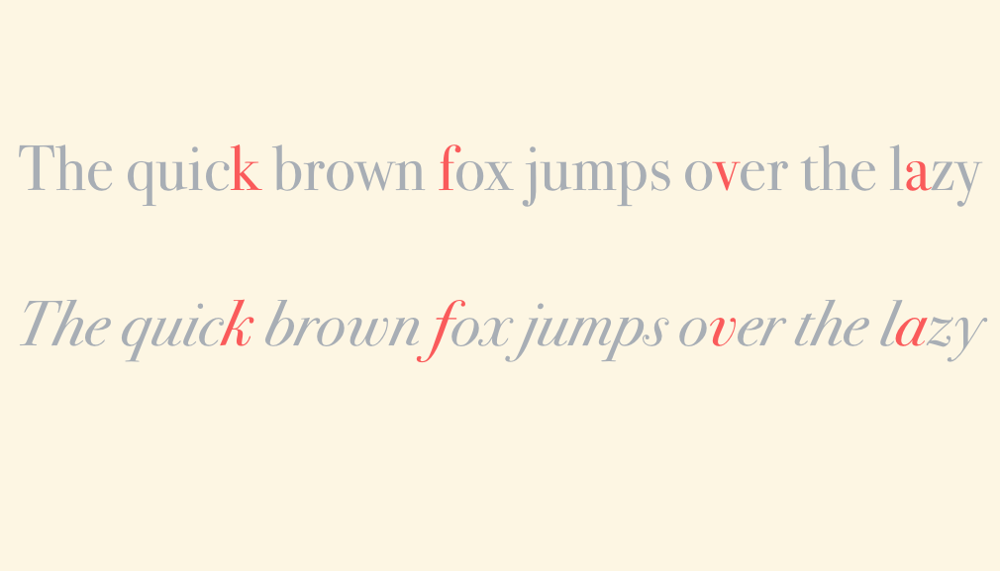
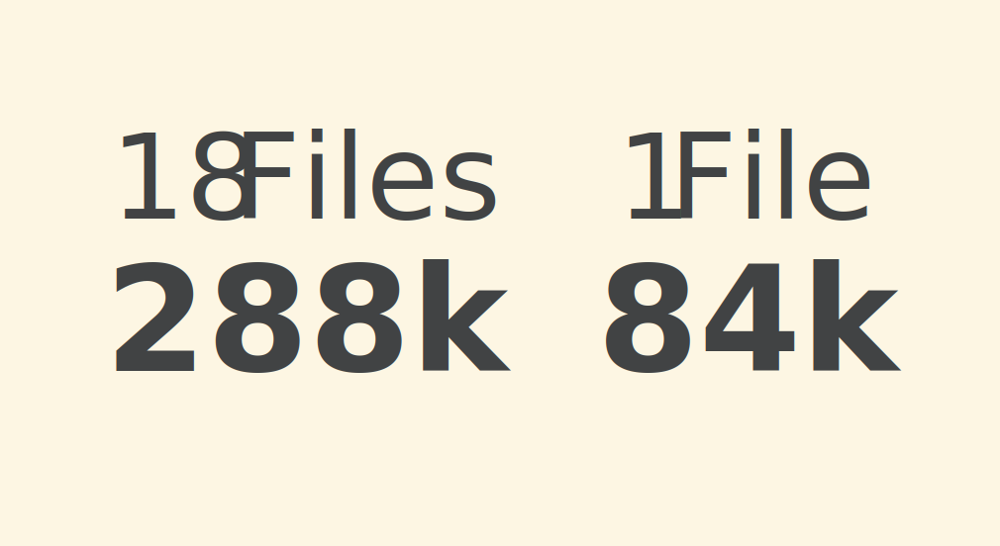
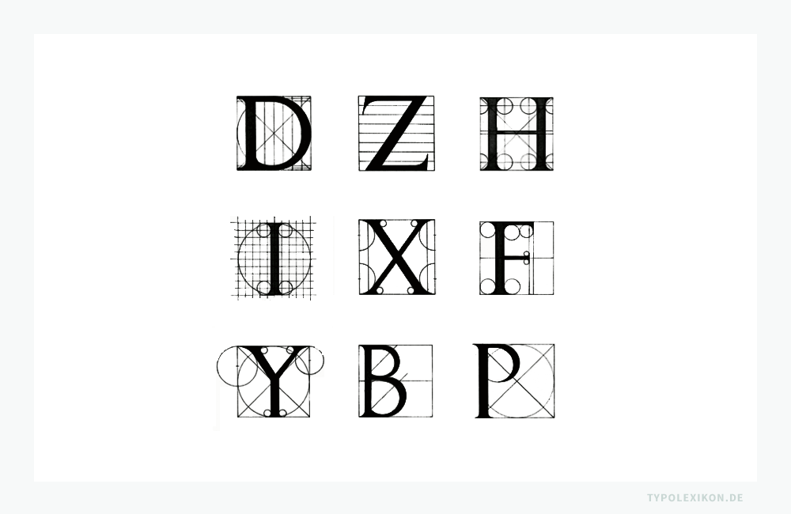

Variable Fonts
What?
John Hudson
"A variable font is a single font that acts as many"
| Achse |
Name |
CSS-Tag |
| Strichstärke |
Weight |
wght |
| Schriftbreite |
Width |
wdth |
| Optische Größe |
Optical Size |
opsz |
| Kursive |
Italic |
ital |
| Neigung |
Slant |
slnt |
Gingham

Amstelvar

Bodoni

FF Meta Variable

Readability



-
Animation
-
Fine-Tuned settings
-
Rich typography
-
Optical Size
-
Bandwith
Sven Lindauer
slindauer@inovex.de